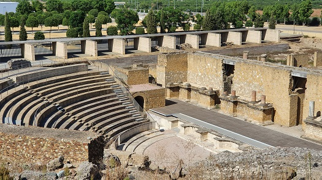

|
TEATRO Está datado en la época de Augusto, aunque tiene reformas posteriores. Se halla fuera del recinto amurallado ocupando la ladera norte del llamado Cerro de San Antonio. Su estructura es la típica de los teatros romanos: cavea, orchesta, proscaenium, scaenae,..... Tenia aforo para unos 3.000 espectadores y estuvo en uso unos tres siglos.

Se han descubierto dos inscripciones referentes a su construcción . Una esta llevado a cabo por dos personajes reelegidos como dunvirius que se encargaron de costear la orquesta, el proscenio, los caminos, las aras y las estatuas. Otra inscripción de otro dunviriu reelegido hace referencia ala construcción del pórtico, los arcos.
A finales del siglo IV se usó como necrópolis y se extendía a lo largo de la vía que comunicaba Itálica con Emérita e Híspalis. Hacia el siglo X fue saqueado sistemáticamente y cubierto por edificaciones.
Ver Teatros romanos
|
| CIUDADES DE HISPANIA | HISPANIA |